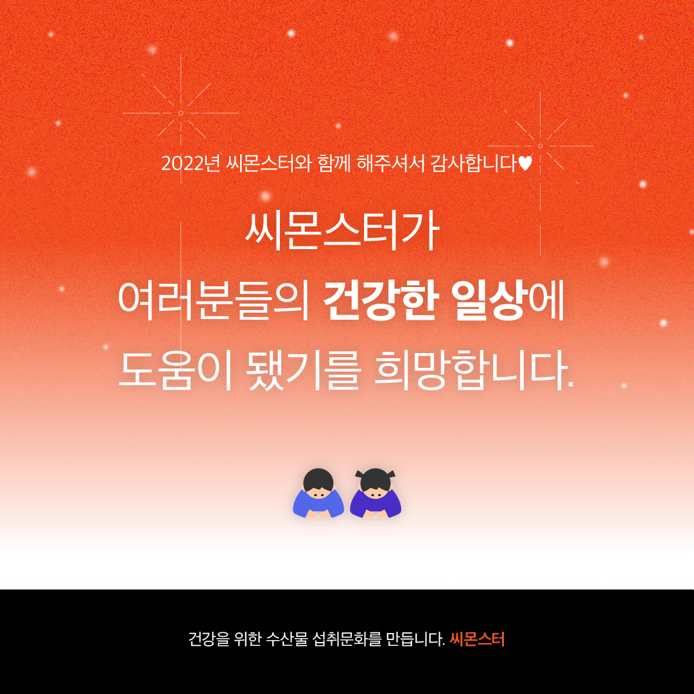
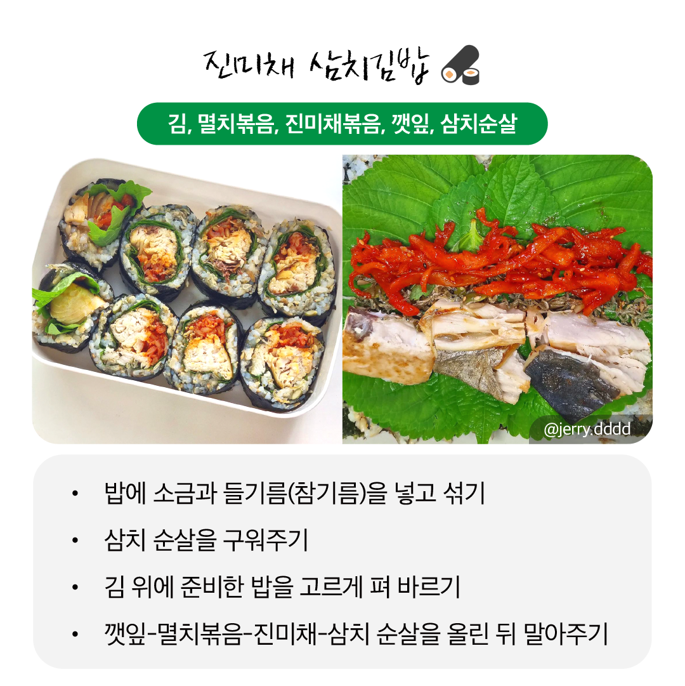

인스타그램 컨텐츠 기획 및 관리 insta content PM
인스타그램 콘텐츠 기획, 제작 및 관리를 통해 1년이 채 안 되는 기간에 팔로워 수를 2,980명에서 7,000명 이상으로 증가시켰습니다. 별도의 팔로워 구매 없이 자연스럽게 성장하였으며, 다이어트 및 건강에 관한 다양한 정보와 고품질 식단 콘텐츠를 제공했습니다. 또한, 식단 챌린지와 서포터즈 등 여러 이벤트를 기획하고 관리하여 사용자 참여를 유도하고 브랜드 인지도를 높였습니다.
Follower growth 22년 8월 (입사 전) | 23년 6월 (입사 10개월 차)
-
🙌 서포터즈 기획 및 관리 〉
가장 많은 공을 기울였던 서포터즈 기획 및 운영입니다. 입사 전인 2022년 8월 초 진행한 서포터즈 모집 대비 2023년 1월엔 4배 이상의 신청자가 모였습니다. 해당 이벤트 이후 팔로워 수 또한 대폭 증가했습니다. 오랜 기간 블로그 운영을 통해 서포터즈와 협찬 건을 다수 경험했기에, 이러한 성과를 이뤄낼 수 있었던 것 같습니다.
→ 컨텐츠 링크모집 컨텐츠
모집 중 이벤트
모집 중 이벤트
-
☃️ 연말정산 인포그래픽 〉
주요 타겟인 2030 세대를 위해 준비한 연말정산 인포그래픽입니다. 구매자의 성향, 조리 방법, 인기 품목 등을 인포그래픽화하여, 한 해 동안의 소비 패턴을 명확히 정리했습니다. 시각적으로 쉽게 이해할 수 있도록 구성되어 있어, 젊은 소비자들이 자신만의 트렌드를 파악하고, 스마트한 소비를 계획하는 데 도움이 됩니다.
컨텐츠1

컨텐츠2
 -
😋 건강한끼챌린지 〉
여름에 진행한 건강한끼 챌린지 모집 컨텐츠를 제작했습니다.

-
🐟 흰살생선 vs 붉은살생선 〉
흰살생선과 붉은살생선의 특징과 영양학적 장점을 알리는 컨텐츠를 기획 및 제작했습니다.
-
🌊 지중해식 식단 〉
건강한 식단으로 주목받는 지중해식 식단과, 생선의 장점을 소개하는 컨텐츠를 기획 및 제작했습니다.

-
🍱 다이어트 밀프랩 모음 〉
규칙적이고 건강한 식단에 도움이 되는 간단한 밀프랩 레시피를 기획 및 제작했습니다. 따라하기 쉽고 간단해 보이는 컨텐츠를 만들기 위해 노력했습니다.
→ 컨텐츠 링크
